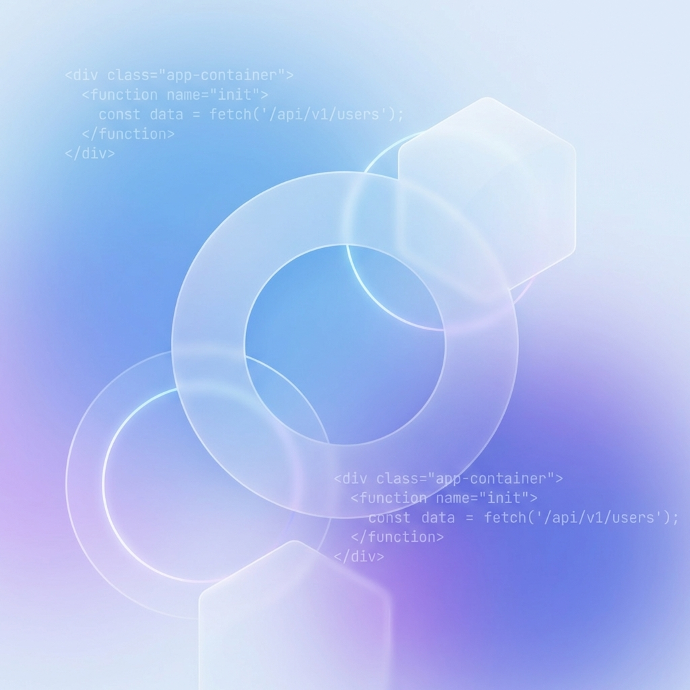

Projects

SilentX
Privacy-first messaging app with end-to-end NaCl encryption and anonymous identities.
React Native · Expo · NaCl

ConvertFlow
Secure file conversion tool with client-side processing for maximum privacy.
React · TypeScript · Node.js
Micro Feed
Lightweight social feed with real-time updates via WebSocket.
Next.js · WebSocket · Supabase
SyncBeats
Collaborative music platform where multiple users sync playback in real-time.
React · Node.js · Socket.io
ThoughtBox
Private journaling app with Markdown support and local-first storage.
React · TypeScript · LocalStorage
More on github.com/gyancodes